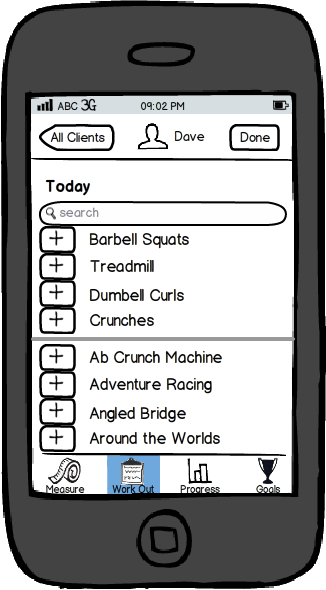
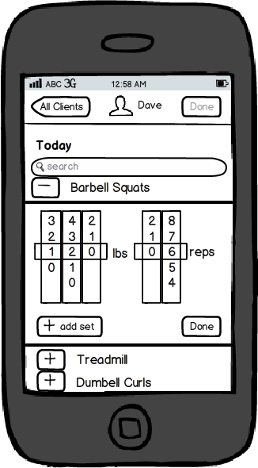
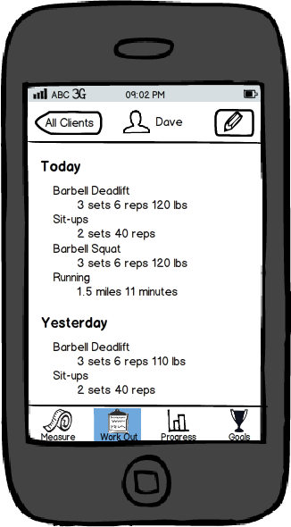
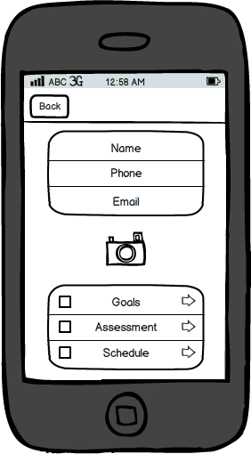
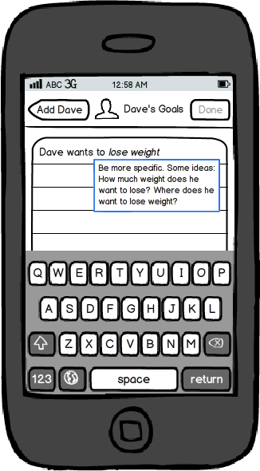
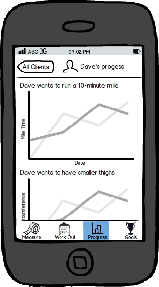

The Abvatar was inspired by personal trainers because we felt like they were a compelling user group that needed more user friendly interfaces to help them with their profession. We specifically wanted to concentrate on monitoring clients goals and helping trainers quickly log workouts. As such, we have a website prototype that allows trainers to track their client’s workouts, progress, and fitness goals. It is smartphone compatible and a simple solution to the problem that most trainers run into when organizing their client’s information.
The purpose of the user interviews is to determine whether or not the interface can be easily understood and used by trainers. By reaching out to professional, free-lance and amateur trainers, we hope to gather insight which will allow us to improve the usability of our paper prototype. We hope that through these usability tests, we will able to further improve a way to give trainers a quick and easy way to keep track of all their clients goals and past workouts in order to continue to motivate their clients to success. Throughout the duration of this experiment, the user will be in charge and we will give them minimal cues on how to interactive with the Abvatar in order to help us pinpoint places in need of refinement.
Our prototype consisted of roughly 30 individual screens resembling an iOS app. The app opens with a list of clients. To select a client, the trainer can tap on one of the faces listed, or can press the "+" icon to add a new client.
After tapping on a client, the trainer has the option to either add a workout, or log a measurement of the client's body, such as weight, bmi, or circumference of an arm.
Upon selecting one of these, the trainer can enter this information, using the "logging" screen that we have created. To make logging information quick, we put the most commonly used workouts and measurements at the top of the screen. Here you can see Barbell Squats and Treadmill appear at the top because Dave does those activities most often.  To add a workout (or a measurement) the trainer taps on the plus icon, which reveals some options to set.
The details of the form depend on the specific workout or measurement the trainer selected, and our interface reflects that. For example, if the trainer selected running, the form would display number inputs for selecting distance and time, whereas, the if the trainer selected "barbell squats" the form would have number inputs for weight and reps.
After adding the workout, the trainer may press "done" to see all the workouts they have added in the past, in a tidy list. They can scroll through the list, and press the edit icon at any time to change what they've done.
Adding a client is also a big part of our design. We wanted to make it effortless. The trainer presses the big "plus" icon on the home screen, types a name, and optionally an email address and phone number, and may take a picture of the client. All this information syncs with the trainer's phone address book. When typing the name, it will autocomplete, using information from the people already in the trainer's address book. The trainer can then set goals, schedule, and write up an assessment for the client.
The goals interface lets the trainer type whatever they want, but also uses natural language processing to pick out details so it can intelligently display progress towards that goal.  For example, in this prototype, we can see it prompting the trainer for more information. Does Dave want to lose weight, or is the goal more specific? The trainer ends up writing that Dave wants "thinner thighs." The app recognizes this goal, and automatically remembers to put the "thigh circumference" and "weight" measurement at the top of the measurements page. If the trainer ends up recording those measurements, the app will create graphs showing the history of Dave's weight and thigh circumference, because those directly relate to his goals. Dave will, hopefully, be encouraged by these graphs, and the personal trainer can use them to gauge the effectiveness of Dave's workouts with respect to his goals.
To get participants for our user interviews, we contacted twenty local gyms within a 15 minute driving radius. We found both trainers at gyms and freelance through Yelp!. In our cold calls, we asked to talk to personal trainers. Some of the trainers were also brought back from our original interviews. To further bolster our participant range, we recruited friends who helped train others as well as general users. Since personal trainers are our users, we wanted to ensure that those were the people that we would get to use our interface since they all share similar thinking and processes in tracking workouts currently.
We have two task scenarios. The first scenario asks the personal trainer to add workouts and to view progress. The prompt asked to input: “Dave performed 40 sit-ups and six barbell squats at 120 lbs”. We wanted to be sure that the trainer could easily understand where and how to list workouts, since recording workouts is the most tedious task, it needs to be as painless as possible. It then prompted the interviewee to edit something that imputed “incorrectly” and to remove an item. Mistakes happen and we wanted to ensure that the user could easily figure out how to make changes to things that he/she may have already added to the workout log. We also prompted the interviewee to find and interpret the clients progress. The interface is supposed to help with visualizing and understanding how the client has gotten closer to achieving his/her goals. In this scenario, we wanted to make sure that these graphs would be something that was familiar to the user and their client, easy to understand, and presented the necessary/relevant information.
Our second scenario asked that the interviewee add a client to their portfolio. The prompt was: “You’re about to start your first session with a new client, Dave.” Here, the interface provided space and steps to allow the personal trainer to input the client’s personal information, training schedule, goals, and current assessment. We wanted to make sure that the process for adding new clients would be straightforward while emphasizing the client’s and the user’s goals.
We contacted the participants and set up a time to interview. When we met with our interviewee, we quickly introduced ourselves and the project and explained how paper prototyping worked. We really wanted to make sure that they were comfortable and were free to give any suggestions. In our script, we really emphasized having the interviewee speak their thought process out loud. We also asked what the interviewee expected to see after each time they clicked a button. Then, when we presented what actually showed up, we asked what they thought about this screen in comparison to what they expected. This would give us more ideas on what is important and how we might improve various aspects, specially in regards to the flow of our screens.
During the interview, we presented them with the scenarios and simple tasks to complete. We remained fairly silent as to not mislead the user. One person acted as the computer, another was read the script, and another kept notes.
After each interview, we talked about the main points or issues that came up in the session. Then, we brainstormed what ways we could solve the issues that arose. We would draft various versions and then choose which one to draft up in Balsamiq. Often times, we would look at other apps to get inspiration to see what might be the industry norm, if there existed one. Essentially, we iterated after each interview so that we would have a new version to test for each new interviewee. We asked ourselves each time we made a major change that the change related back to the user’s goals and personas. Occasionally, we had to remind ourselves that our interface is to help trainers achieve their client’s goals, so we tried to put more of an emphasis and centrality around it.
During our interviews, we looked for how long it took them to find buttons, how many clicks to get to each action done, how well they understood icons/graphs, and where/what they on stuck. It was important to see how long it took them to find the buttons that they needed because we want the process to be as fast as possible. If it takes them awhile to find the button, it can be frustrating and increase the amount of time needed to track workouts. We wanted to minimize the number of clicks it took to get to each action, as to further minimize time. This would be a key feature in how likely it would be for the trainer to continue using an interface like our own. Many trainers have told us that they often just stick to pen and paper because it is easy and fast, so we have to make sure our process is better than this. It was important that the user also can understand what each button does/represents. We had many iterations in choosing the right icon picture. We eventually decided also to add text to the bottom of the icons to clarify what each of them mean. If users can’t understand what buttons do, then the buttons are useless to them. We also paid extra attention to where people got stuck and were unsure of what to do for the next step because that means it is unclear what the options are for getting that task done. Clarifying what steps need to be taken next can help with the user’s comprehension as well as time minimizing.
In the actual interviews, we looked about how easy it was for the user to understand the icons and how many pages they had to go through. For example, we originally did not have any text for each of the buttons. This test was important because if they did not understand, then people cannot use the interface. To see how long it would take users to input workouts, we watched for many different windows and clicks it took the interviewee to finish the task. This was important because, as mentioned before, it is really important that the process be short, sweet, and easy.
During our testing, we found that our placement of icons and use of various images were not always as clear and straightforward as we thought. Often times, people would make cautious guesses as to what each icon meant. We added a new icon, a measuring tape, to represent measurements that would help quantify the client’s goals. The icon we had for the tape measure was not too clear and people did not understand what it was. Some people also had problems with the graph icon, we tested both a bar and line graph.
Another common result was not knowing how to edit or finish adding/editing. The buttons were not always apparent or were put in locations, making the user think it did not apply to their current action. There were not enough buttons for it to be explicit as to how to complete a task.
We also found that labeling of dates were not in a way that was consistent with how people think. We had just listed the dates but people think and prefer in reference to today’s date, especially since people often do not know what day it is. Instead of using specific dates, we used labels like “today” and “yesterday”.
We also found that we were lacking in ways that people might track progress, especially in terms of hard measurements. We originally had just charts showing how much more a person could do but found that tracking weight and measurement size would also be important. Users suggested adding being able to note the circumference of a client’s arms or the visual difference that one can see in pictures.
In regards to our progress chart, we found that users could understand and use our charts. We used simple bar charts to visually display weights and reps for each workout, yet it did not provide an excitement or hold any real significance in terms of the client’s goals.
Overall, people liked the simple design and were able to complete the tasks.
One of our most interesting learning experiences in our tests is that innovative interfaces aren’t necessarily better. When we thought of placing two half-bodies on the add workout page, we got really excited because we hadn’t seen that interface in any of our research. But Cory didn’t understand the purpose of the bodies. We realized that even though searching for workouts by selecting body parts is cool, it’s not effective. Searching and browsing are tasks that are very common for users, and making those features obvious is more important than adding a feature we think is cool but doesn’t work for the user.
On a website, position is often represented through breadcrumbs, or a highlighted tab or menu item. These options are feasible on large screens because of the availability of screen real estate, but these affordances can’t be made on smaller screens. The very first iteration of our prototype had myriad icons on top and bottom bars, and Sharon found these icons very confusingly organized. As designers, we didn’t realize the subtle message we send to the user when we group icons on the toolbar. Once we’d moved our paper prototype to Balsamiq, we iterated repeatedly on what our navigation toolbars would look like, as these were central to how our users navigate the app.
In the vein of creating effective navigation tools, we found picking the right icons to represent different pages difficult. YoonAh was confused about the difference between a tape measure and a bar graph, even though these icons took the user to vastly different parts of the app. Even though icons without labels may be more aesthetically appealing, they also force a learning curve on the user. The early positive feedback we got on the prototype indicated that it was very simple, with a very shallow learning curve. In order to preserve that feedback, we placed text labels on the icons, and preserved the experience our users expect from the rest of the app.
An important element of our app is the Goals section. We decided to go with an “opinionated design” approach, which encourages trainers to elicit specific goals from their clients and to train according to these specific goals. Initially, our prototype allowed trainers to log trainers by selecting a verb (e.g., Lose, Run, Lift) and a number. This forced the goals to be specific, but the screen didn’t reflect how trainers really log goals, and our early user tests indicated that the screen was hard to use. One of our biggest challenges was redesigning this screen. To do so, we went back to our initial user observations. We wanted our app to complement a trainer while they’re figuring out their user’s goals, while also suggesting the trainer log specific goals. Our resulting screen reflects the current tool trainers use to log goals: a notepad. As trainers type notes into the notepad, our app suggests how these goals can be made more specific. If a trainer writes “Dave wants to lose weight”, the app won’t let them save the list of goals, and will show a tooltip that contains some suggestions on how to make the goal specific. We have yet to fully test this new screen, but we feel it’s an effective way to address the problems trainers have with eliciting and helping with client goals.
Our vision for this app includes a trainer using the app while in session with a client, but we couldn’t test this scenario with our users. We believe that trainers require an app that can take data quickly, so that they don’t lose time during the workout. Ideally, using our app is as easy as taking a pen to paper. Once we’ve implemented the design, we look forward to trying this critical scenario out, but until we won’t really know if our interface is as effective as we want it to be.
| Cypress | Dana | Sharon | Noam | |
| Prototype Design | 25 | 25 | 25 | 25 |
| Prototype Construction | 45 | 0 | 25 | 30 |
| Script Writing | 50 | 50 | 0 | 0 |
| Deliverable Writing | 10 | 55 | 20 | 15 |
| Website Coding | 100 | 0 | 0 | 0 |
| Testing | 35 | 25 | 27 | 13 |